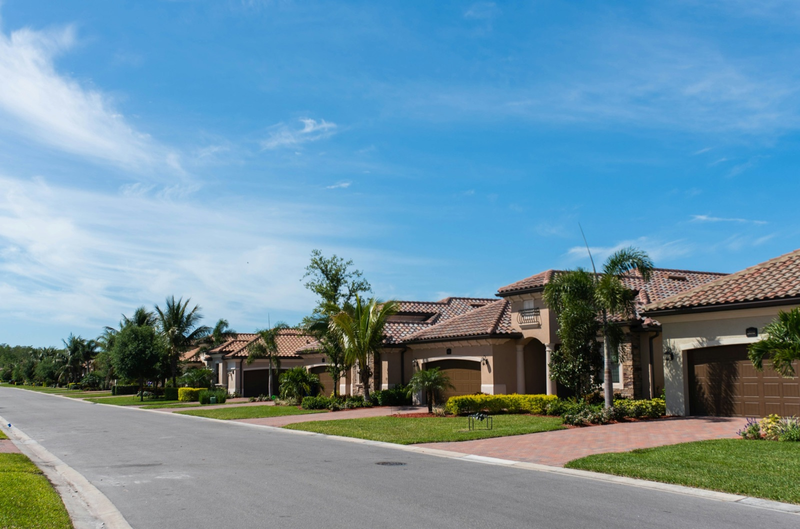
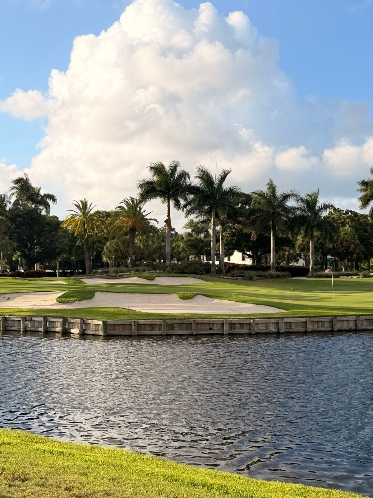
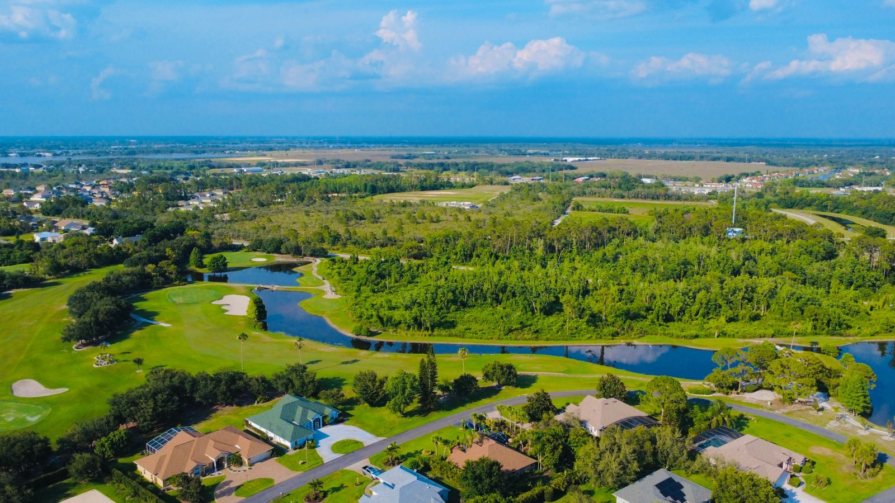
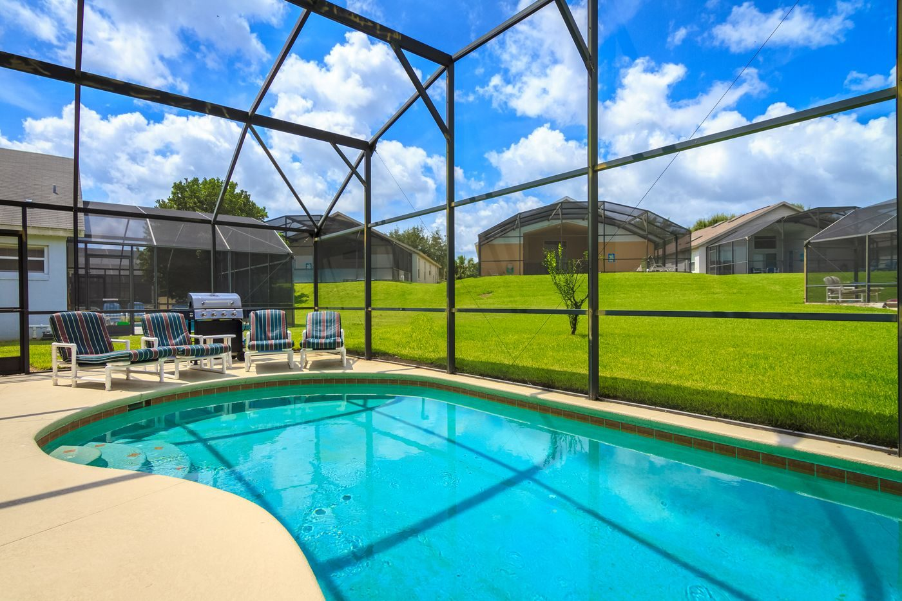
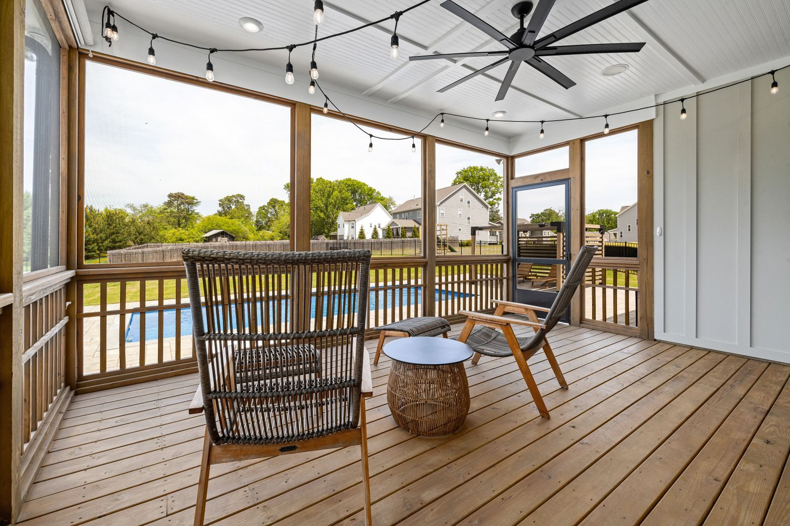
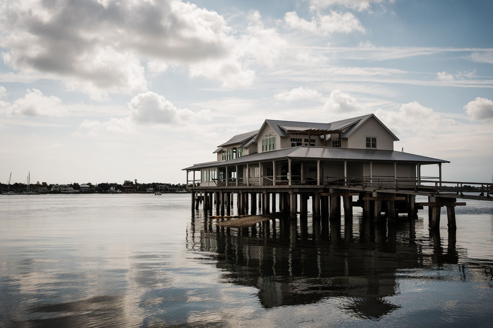

01

A master-planned community in unincorporated Sarasota County, with two golf clubs and the Legacy Trail.
From the Palmer Ranch Master Property Owners Association.
Before you offer
Palmer Ranch is a master-planned community in unincorporated Sarasota County. The land traces back to Bertha Honore Palmer, who bought a large landholding after her first visit to Sarasota in 1910. Hugh Culverhouse, Sr. bought the rest of the Palmer estate in 1972 and shaped it into the planned community.
Every owner belongs to the Master Property Owners Association. Owners also belong to a community or tract association and to a neighborhood association within it, and each can have its own dues and rules. Christina reads those documents with you before an offer.

On the community map
Residential communities such as Prestancia and VillageWalk, retail and commercial sites, and county parks, all on one map. palmerranch.net
TPC Prestancia and Stoneybrook Golf & Country Club both appear on the community map.
The association says it passes through Palmer Ranch, and that Culverhouse Nature Park gives access to it.
Potter Park sits beside the YMCA, and the one-mile Stoneybrook Nature Trail runs along Central Sarasota Parkway. Parks and Recreation
Homes for sale

01

02

03

04
Listing information is provided in part by Stellar MLS through IDX Broker.
On the ground
From the Blog

Associations
The dues, the reserves and the rules, for a neighborhood that sits inside a larger association.

Flood zones
The association publishes floodplain maps for the whole community; this shows how to find one home's own zone and elevation.
Inspections
What the inspector covers on the roof and the systems, and why the roof's age matters to an insurer.
Questions
No. It is a master-planned community in unincorporated Sarasota County, and the county governs it.
The Master Property Owners Association. It says all owners of residential, commercial-industrial and recreational property are members, and that it maintains common-area landscape, including public road and drainage rights of way.
Yes. The master association says owners also belong to a community or tract association and to a neighborhood association within it. Ask for the documents for the specific address.
There is no single official edge to print. The master association publishes a community map listing the communities inside it, so check any address against that map.
Yes. The master association publishes floodplain and watershed maps for the community, and the zone and elevation of the individual house still decide the insurance. Sarasota Flood Zones shows how to look both up.
The Sarasota County School District assigns schools by address.
Nearby communities

Talk to Christina
Book a call and tell Christina which community you are looking at. She reads that community's association documents and checks the floodplain map for the address before you tour.